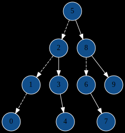

Implement a binary search tree.
I would like you all to collaborate on these projects in small teams. Teams must have 3 – 4 people. As usual:
All the functions you have to write are labeled with TODO as usual. The skeleton code should compile as it is (but the tests will probably crash if you run ./check).
For testing, see the prior readmes. The procedure is pretty much the same. However, a few notes are in order about viewing the trees. In the interactive main program ./main, the Draw command will make a half-hearted attempt to print the tree on the screen. If you have graphviz (highly recommended), then you might try the Write dot command, which will write a description of the tree as a graph, and then convert that to an svg (stored by default in /tmp/csc212bstree.svg) which you can view in your browser, or whatever your image viewer of choice is. If you have the browser side by side with your terminal, then you can check on how the tree looks after every operation. Here’s an example of the output:

NOTE: you have to write postOrderST first to make this work. But that should be very easy…
I plan on you writing most of these functions recursively.1 To facilitate the recursive approach, there are a bunch of functions with the suffix ST, which stands for “Sub-Tree”. Why are they there? Why not just use member functions of the tree? Well, recursion usually works by building a global solution out of solutions to smaller sub problems. The issue is one technical, syntactic detail: the subtrees are defined just by pointers, not by things of type Tree. So, to make the situation more amenable to recursion, we define subtree functions which take a node, and then have the member function just call that on the root, like so:
void clearST(treeNode*& stroot) {
/* do stuff to the subtree with root stroot... */
}
Tree::clear() { clearSt(this->root); }In case you get bored, a few other things to try:
gcc is actually optimizing your recursion into loops. (You can get annotated assembly listings with the flags -S -fverbose-asm). Were there any functions that remained recursive after optimization?Just make sure your group is listed on Piazza before the deadline.
With -O2, gcc will usually optimize the recursive calls into loops, so there isn’t going to be much of a performance cost.↩